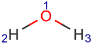
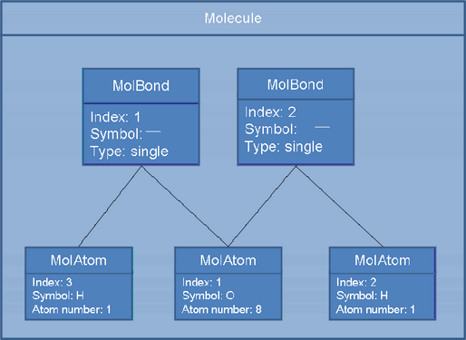
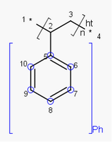
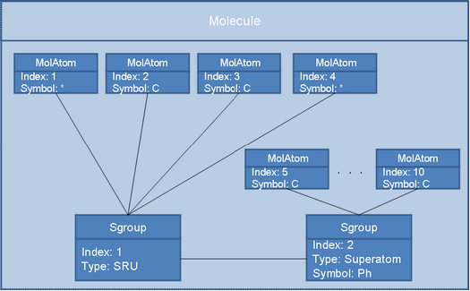
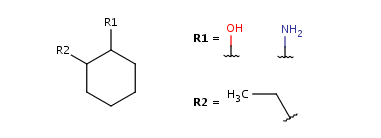
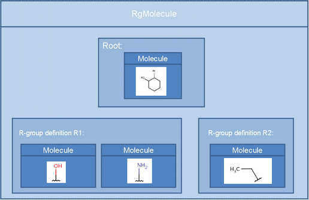
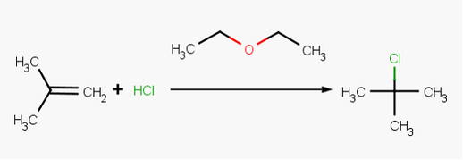
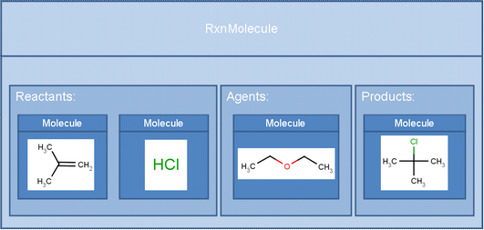
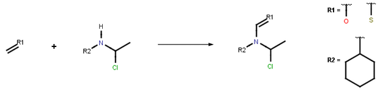
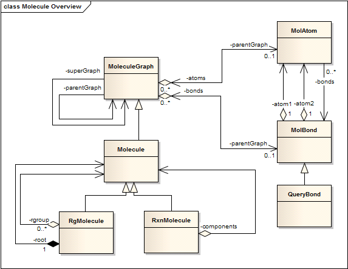

In this part several chemical structures are used to illustrate the internal representation of molecule graphs. The diagrams below are not complete yet demonstrate the most relevant data items and their internal relationships. Examples range from the simplest molecule to complex reaction schemas.
As a first example take the water molecule.

Labels next to the atom symbols are the internal atom indexes assigned
by the system
(note, that actual values of the indexes are the displayed values minus 1,
as representation starts from 0).

In this diagram each box represents an object of the class named in the header row. Names and values in the bottom part of the box are data fields (attributes, class members) and actual values that represent the molecule drawn (water, in this example). Embedded boxes represent data objects that constitute the outer object: water consists of two bonds (MolBond objects) and three atoms (MolAtom objects). Lines connecting the boxes represent associations between the objects: each pair of atoms is linked by a bond.
In the next examples the notation of the Molecule object is used, but only from a “bird’s eye view”, that is, without considering its internal finer scale structure, which, however, is always present.
S-groups are structural entities within a molecule. S-group provides a base implementation to represent abbreviations, multiple groups, polymers, attached data, coordinated structures, position variations, generic groups, ordered and unordered mixtures of components. Abbreviated and multiple groups are often drawn in an abbreviated or condensed form in the structural formula.
In the example below the monomer unit of polystyrene is used to demonstrate the internal representation of S-groups in ChemAxon core classes.

This monomer consists of two structural parts that can be denoted by an S-group: the phenol ring and the hydrocarbon chain.

The structure contained in the S-group is represented by a Molecule object just as any other structure, since the S-group can simply be regarded as a particular structural entity within the molecule. Thus the internal representation of the Molecule is extended by two S-group objects that depict the type of the S-group and its abbreviation (symbolic name) if one exists. Each S-group object refers to its constituent atoms.
An R-group is a collection of possible substituent fragments that can be part of a molecule at a specific location.

The complexity of such chemical structure representation cannot be captured by one single Molecule object.

Instead, an RgMolecule object is introduced (which, however, inherits Molecule) and this object embeds all parts of the structure: the core (or scaffold) structure, referred to as the “root” molecule, and all elements of each R-group as Molecule objects.
A reaction is a collection of reagents, products and agents. It is represented by the RxnMolecule object. The reagent, product and agent elements are Molecule objects embedded into the RxnMolecule object. The type of an element is defined by its relative position to the reaction arrow. The present representation is capable to express single step reactions only.



To summarize key aspects of the representation of chemical structures in ChemAxon’s core classes the most relevant classes along with their relationships are presented below in class diagrams.
chemaxon/struc/MoleculeGraph.java
chemaxon/struc/MolAtom.java
chemaxon/struc/MolBond.java
chemaxon/struc/QueryBond.java
chemaxon/struc/Molecule.java
chemaxon/struc/RgMolecule.java
chemaxon/struc/RxnMolecule.java

|
Expandable S-group behavior |
Aromaticity |